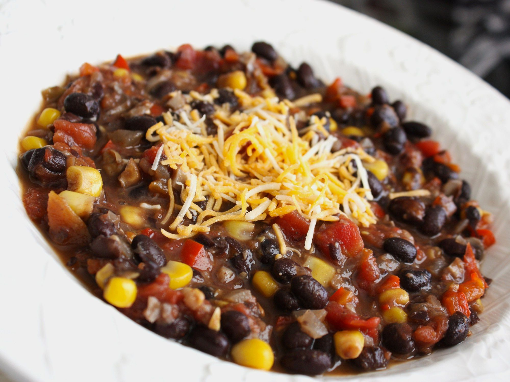

Chili

Description
Ground beef chili with beans. Makes approximately 8 servings.
Ingredients
- 1 lb. ground beef
- 1 yellow onion, chopped
- 5 cloves of garlic, minced
- 1 red bell pepper, sliced
- 1 green bell pepper, sliced
- 3 jalepeno peppers, sliced
- 1 16 oz. can of black beans
- 1 16 oz. can of light red kidney beans
- 1 16 oz. can of tomato sauce
- 1 16 oz. can of corn
- salt
- black pepper
- chili powder
- cumin
- paprika
- cayenne powder
- olive oil
- sriracha sauce
- 1 16 oz. beer
Steps
- Lightly coat large pot with olive oil and set on medium-high heat.
Roll portions of ground beef into size of gumballs. When oil hot,
place beef balls into pot. Turn balls over at some point to cook
evenly.
-
When meat is browned, add onion and peppers. Cook until onions
slightly translucent. Add garlic.
-
Add spices, tomato sauce, and beer. Bring to boil. Add 3 squirts of
sriracha sauce. Reduce heat to simmer, cover, and set timer for
45 minutes.
- Remove cover and add both cans of beans. Return to boil. Reduce
heat to simmer. Stir every 20-30 minutes.
-
After an hour or two, add corn. (Can strain corn to reduce cook
time.) Return to boil. Reduce heat to simmer. Stir every 20-30
minutes until chili reduces to desired thickness.